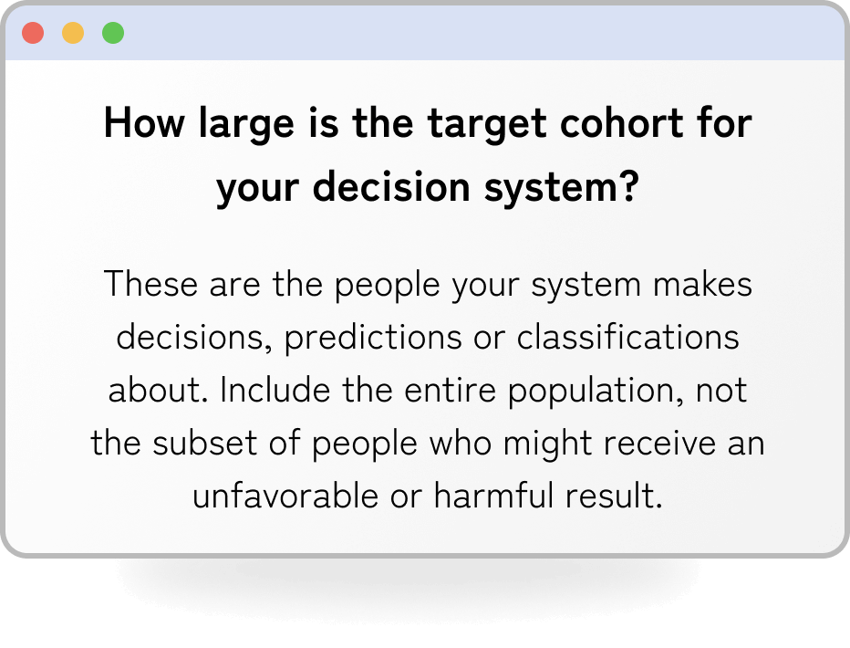
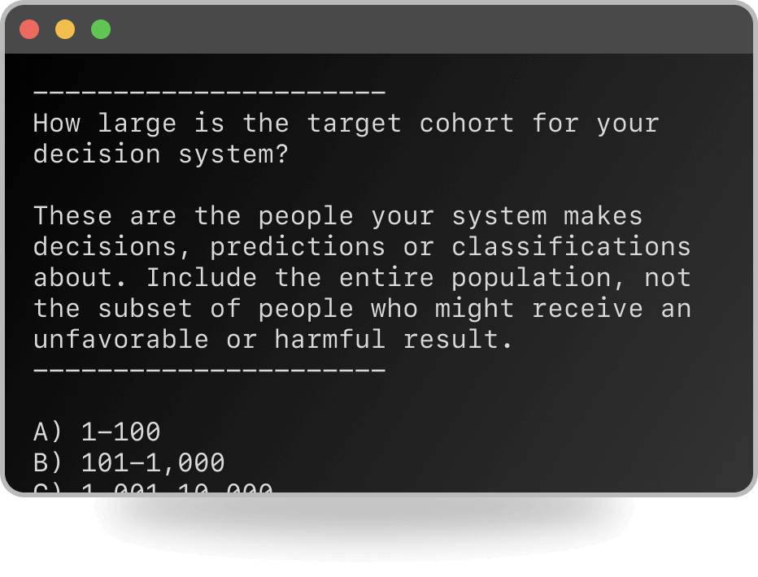

What is it?
Sweet Summer Child Score (SSCS) is a scoring mechanism for latent risk. It will help you quickly and efficiently scan for the possibility of harm to people and communities by a socio-technical system. Note that harms to animals and the environment are not considered.
SSCS takes a step back from the specifics of your technology and looks at environmental, systems and human factors. It's intended to be used at the ideation part of your process, to critique product ideas or compare competing features. But SSCS can also be used post-hoc to critique an existing system, or propose approaches to harm mitigation.
Take the quiz
Web form online
It's a simple javascript web form with no cookies and no trackers.
Take the quiz onlineIn your terminal
You can install the package locally and run it in your terminal.
Python command lineR command line & web form
Rust command line
How long does it take?
If you're familiar with the system you're critiquing, it should take 10-15 minutes to complete. Respond with your gut, don't overthink it too much.
Critiquing proposals/ideas
You can use the quiz to critique ideas that aren't developed yet. You need to have sufficiently sketched it out and have the rough shape & feature set of the proposal or idea.
How is the score calculated?
You start with 99 points as the highest possible score. No one can score 100, we deduct one point to acknowledge the impossibility of building and deploying anything that is perfectly fair, accurate or bug-free.
As you answer questions, points are deducted from your score. The three sections are worth roughly 1/3 each. The lower your final score, the higher the risk assessment.
The multiplier multiplies your final calculated points deduction with a value between zero and one. This scales the final result to reflect the scale of demographic — for example a system which could impact 100 people should never be identified as higher risk than a system which could impact 1 million.
You can explore the scoring mechanism in detail in the questions.json file. This is an open source repo, pull requests and feedback welcome!
Why a score at all?
Great question! It's more a MacGuffin, less a serious device. The meta-work of this quiz is to remember that all aspects of this and any risk assessment are subjective: how the quiz is composed, the questions that are included and excluded, how they are weighted, how and who answers the questions, what they do with the final score and recommendations. While isn't a deep learning model, it is a perfect model of how all socio-technical systems operate in the real world: as a series of opinions and educated guesses encoded and turned into a repeatable process. It's up to you to decide whether those opinions and educated guesses are good.
Who can use it?
This is designed for use by data scientists, product managers, and other technologists. However it's simple enough that end-users, journalists and auditors can use it to critique an opaque system. This score is model and stack agnostic, so you don't need to see 'under-the-hood' to use it.
How should you use it?
This is a qualitative assessment and relies on you to complete it honestly. There's no point if you're just going to give yourself the best score! Without discussing first, have multiple people in your team complete the quiz. How close were your scores? Which areas did you agree and disagree? Discuss and attempt to resolve the differences, especially where there is higher variance in the answers.
Why don't we scan for minority identities?
We focus on the disadvantages usually experienced by these populations rather than the demographics of disadvantage. We don't want to contribute to the conflation of minority identities and harm.